MASON INVITE SUPERVISORS

Adhira is a sophomore at Mason HS and has been competing in Science Olympiad since 7th grade. Her favorite events are Disease Detectives, Forensics, Designer Genes, and Water Quality! Her favorite pastime is listening to music at full volume while looking at houses on Zillow.


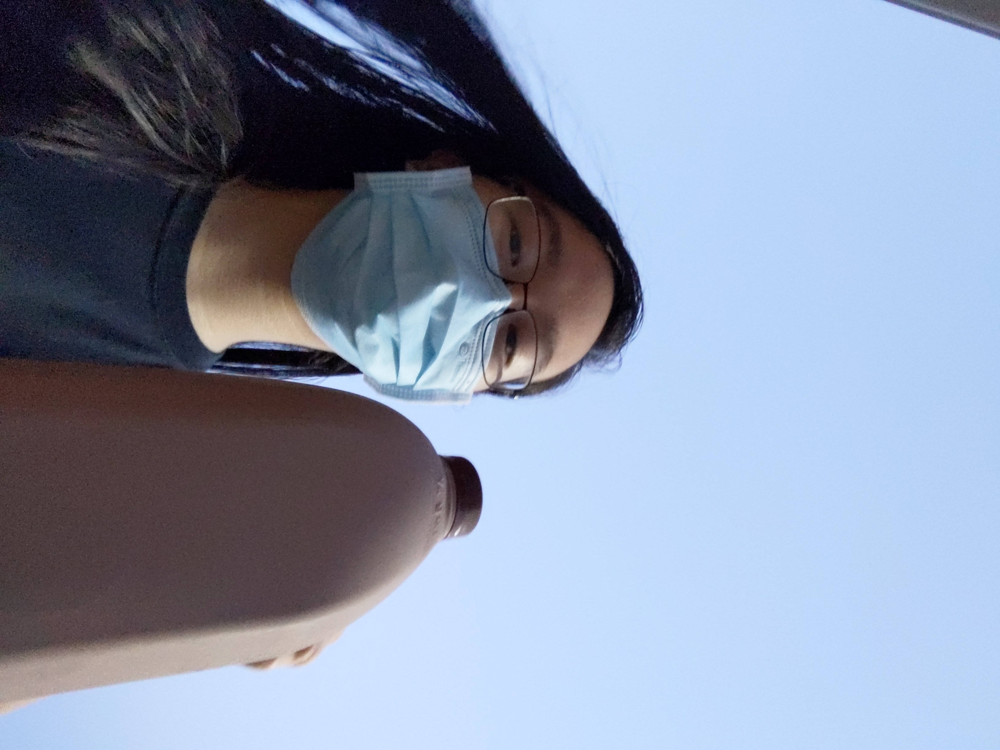

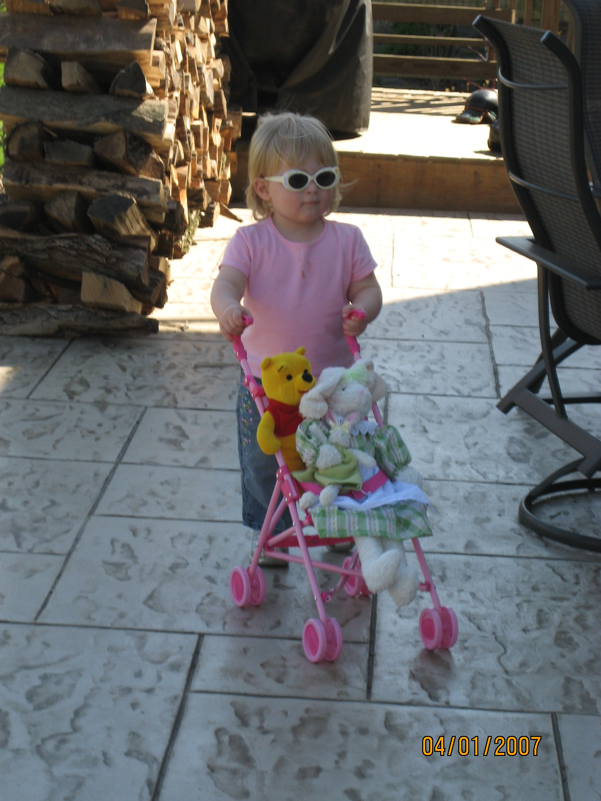
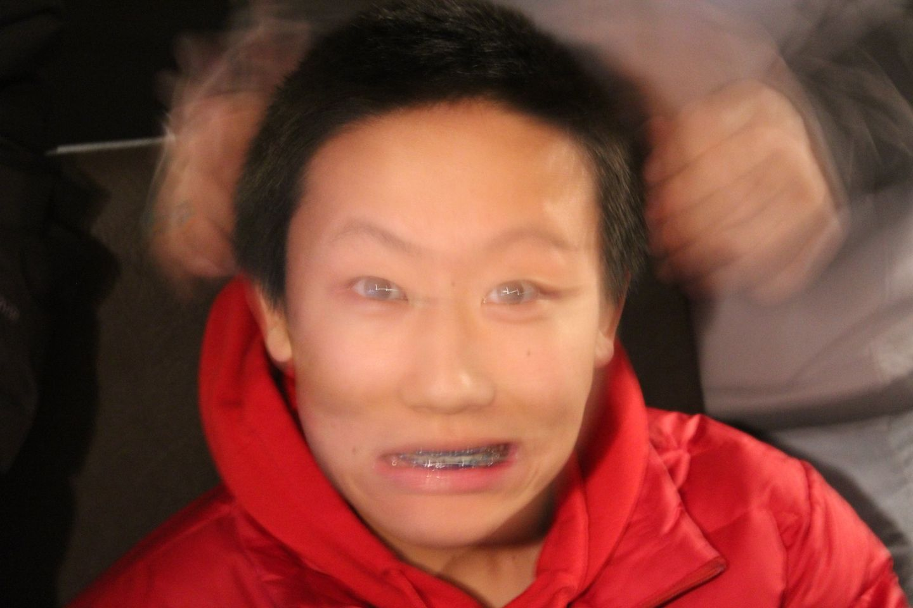
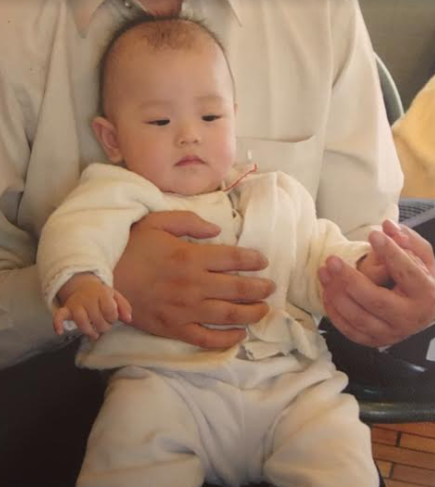
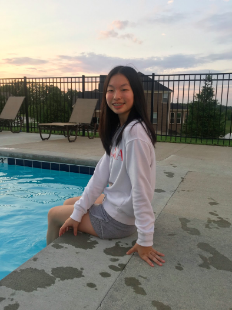
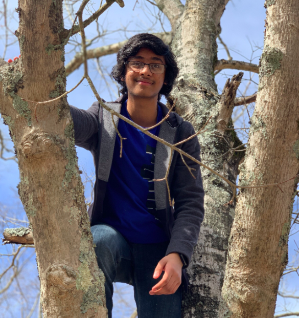
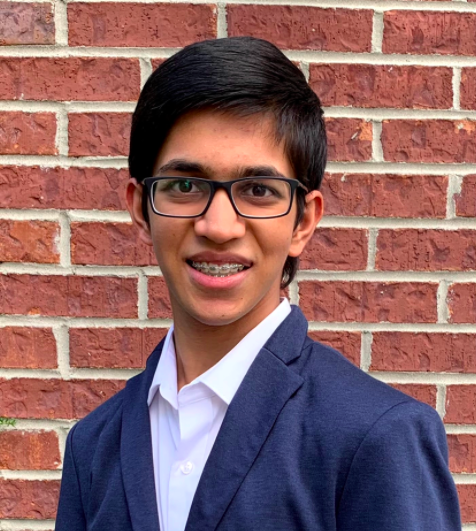
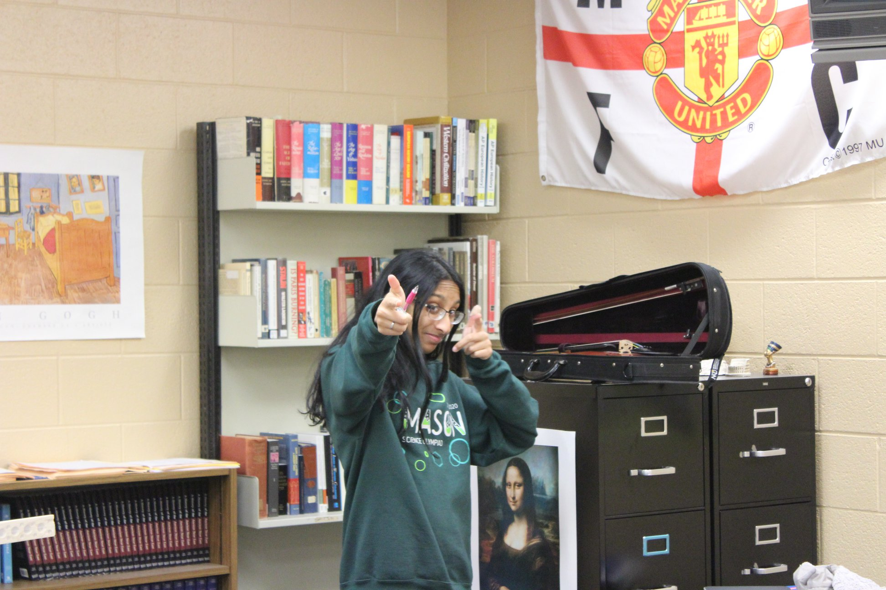
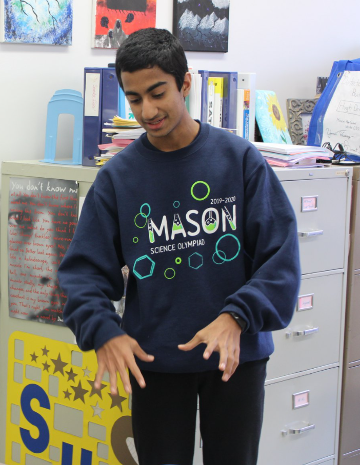
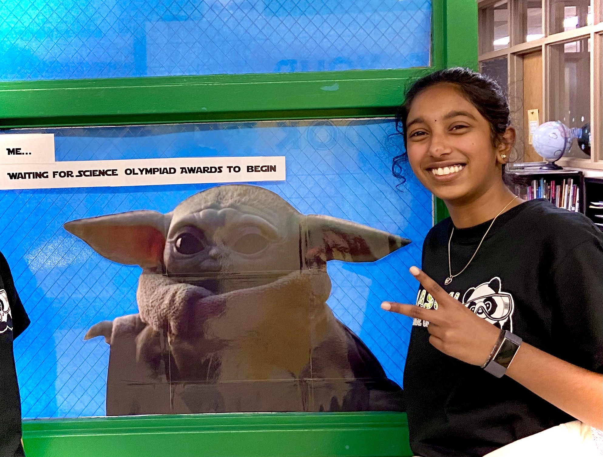


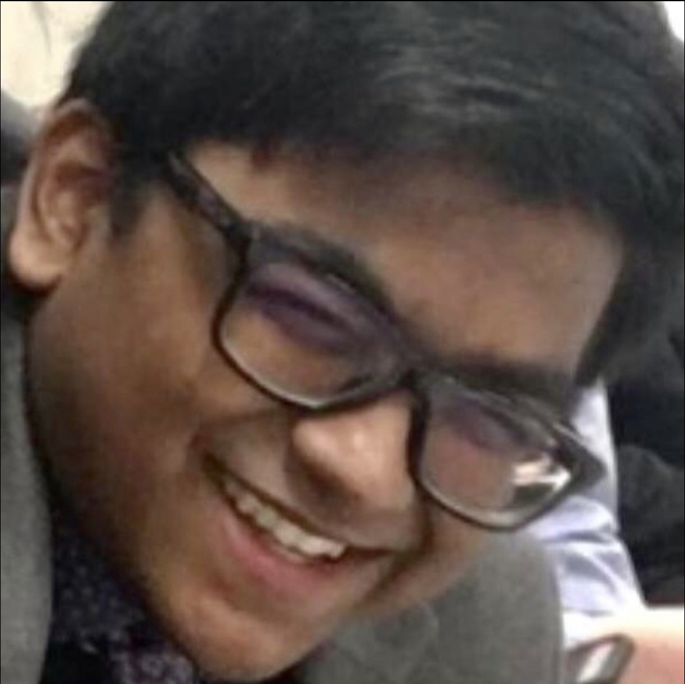
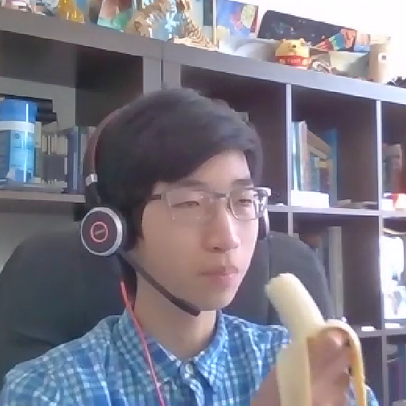